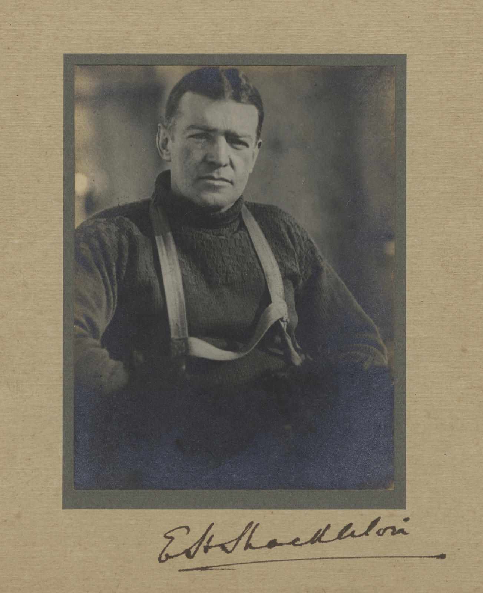

Chapter 23
The Admiralty’s Quiet Reckoning
Seen from above in the brown fog of that wartime September evening, London lay exhausted. Its patterns revealed themselves: pale halos of streetlamps in the murk, buses crawling past sandbagged shopfronts, the darkened Thames sliding past docks where shipping moved in controlled lanes. Blackout curtains hung across West End theatres, and queues formed outside public houses that would close early. Across the city, recruiting posters were plastered over with newer recruiting posters. Time was measured in casualty lists and ration cards, each day a ledger entry in a war whose end receded like a horizon.
In a second-floor meeting room at the Royal Geographical Society, the lights burned behind blackout curtains. The date was 28 September 1916. The council had gathered to receive a report that had arrived by post from New Zealand, carried on a ship that had dodged German raiders through the Pacific and the Panama Canal.
The document lay on the central table: forty-seven pages of typescript, bound with brass fasteners, its title page bearing the expedition’s formal name and Shackleton’s title as commander. Beside it sat a sheaf of maps, a list of stores expended, an inventory of equipment lost, and a covering letter that began with the formal phraseology of official correspondence. The council members—men who had sponsored expeditions, who had read hundreds of such reports, who had pronounced judgment on ventures that had succeeded and ventures that had failed—turned the pages with the careful attention of auditors examining accounts that did not quite balance.
The expedition was over. The reckoning was about to begin.
What the newspapers had printed and what the council now read were two different things. The London dailies had caught wind of Shackleton’s return to civilization in late May, when word had reached Punta Arenas that the Yelcho had lifted the twenty-two men from Elephant Island. The Times had run a brief wire-service item on 2 June, buried on page five beneath war dispatches: “Shackleton’s Party Rescued.”
By September, when Shackleton himself had reached London via New York and the Atlantic crossing—avoiding the German submarines that still hunted the shipping lanes—the press had begun to understand the shape of the story. The Daily Chronicle published a three-part serialisation in October, and the illustrated papers ran photographs of bearded men in tattered sweaters, of a small boat pulled up on a rocky shore, of Shackleton himself, his face lined with exhaustion but his eyes bright with the certainty of survival. The public, hungry for good news from any quarter, embraced the narrative of triumph against impossible odds. Here was a story of British grit, of men who had endured without complaint, of a leader who had brought his entire party through the worst the Antarctic could inflict.
The Royal Geographical Society’s council room received a different story. The report that Shackleton had filed with the society and with the Admiralty laid out the expedition’s history in the neutral prose of official documentation, and that history was one of failure measured in nautical miles, in pounds sterling, and in human lives.
The Endurance had entered the Weddell Sea on 5 December 1914, had been beset by pack ice in January 1915, had drifted for ten months, and had been crushed and sunk in November 1915. The transcontinental crossing—the expedition’s stated purpose—had never begun. Twenty-eight men had survived on drifting ice floes, had taken to three open boats in April 1916, had reached Elephant Island, and had been rescued in August 1916 after Shackleton and five others had sailed the James Caird eight hundred miles to South Georgia.
On the other side of the continent, the Aurora had been carried away from its moorings in a great gale in May 1915, had drifted for nine months, and had reached New Zealand in April 1916 with its rudder shattered and its crew exhausted. Ten men had been stranded at Cape Evans, had laid depots for a crossing that never came, and had lost three of their number: Mackintosh, Hayward, and Spencer-Smith.
The expedition’s geographical achievements were nil. Its financial position was ruinous. Its human cost was three dead.
The council members turned the pages. They had seen this before—expeditions that returned with nothing to show but survival, commanders who came home to explain why the money had been spent and the objectives had not been met. The society’s archives held dozens of such files, each one a record of ambition colliding with the realities of ice, ocean, and distance. What distinguished this file was the scale of the failure and the completeness of the survival. No expedition of comparable ambition had ever lost its ship so early, so completely, and so far from help. No expedition had ever extracted its entire complement from such a predicament. The council members read the report with the professional detachment of men who understood that exploration was a business of managed risk, and that risk had been mismanaged here on a grand scale.
The Admiralty, across town in Whitehall, had received its own copy of the report, along with a covering letter from Shackleton requesting that the government absorb certain of the expedition’s debts. The request was not unprecedented. The government had funded elements of previous Antarctic expeditions, had purchased vessels for the Discovery and Morning expeditions, had contributed to Scott’s Terra Nova venture.
But Shackleton’s Imperial Trans-Antarctic Expedition had been launched as a private enterprise, financed by subscriptions, by the sale of rights, by Shackleton’s personal guarantees. The war had intervened before the expedition sailed, and the government had declined to provide direct funding, though it had granted Shackleton leave from his naval duties and had permitted the use of the Royal Geographical Society’s rooms for planning meetings. Now Shackleton was asking the Admiralty to consider the expedition’s debts as a public obligation, on the grounds that the rescue of the Ross Sea party had required government assistance and that the expedition’s survival had reflected credit on the nation.
This request echoed the expedition’s original financial struggles. Shackleton had estimated he would need £50, 000 to carry out his plan, believing public appeals caused ‘endless book-keeping worries’. He had instead solicited wealthy backers, securing a £10, 000 government pledge in December 1913 provided he matched it privately. The war had then disrupted fundraising, leaving the venture perilously undercapitalized from the start.
The Admiralty’s response was a model of bureaucratic restraint. The file, stamped “Confidential” and circulated among the appropriate departments, recorded the official view that the expedition had been a private venture whose financial obligations remained private. The government had provided a vessel—the Aurora had been purchased from the government of Newfoundland for a nominal sum—and had assisted with the rescue attempts in 1916, but these actions had been undertaken as humanitarian measures, not as endorsements of Shackleton’s financial position.
The file contained a memorandum from the Accountant-General’s office noting that the expedition’s debts exceeded £20, 000, that Shackleton’s personal resources were insufficient to cover them, and that the expedition’s creditors were likely to seek satisfaction from whatever assets remained. The memorandum recommended that the government decline to assume liability, but that it consider a grant in recognition of the expedition’s rescue achievements. The recommendation was forwarded to the Treasury with a covering note that expressed the Admiralty’s formal position: the expedition had failed in its objectives, but the survival of the entire Weddell Sea party and the rescue of the Ross Sea party survivors constituted a credit to British seamanship and endurance.
The tension between public celebration and private calculation ran through the correspondence like a fault line. The Royal Geographical Society’s council, meeting in October to consider Shackleton’s report, debated whether to award him the society’s highest honor. The medal had been given to Scott after the Discovery expedition, to Amundsen after the Northwest Passage, to Shackleton himself after the Nimrod expedition.
The council’s minutes recorded the division of opinion. Some fellows argued that the rescue of the Endurance party represented one of the greatest feats of leadership and navigation in the history of exploration, and that Shackleton deserved recognition for bringing his men home without loss of life from the Weddell Sea side.
Others pointed out that the expedition had failed in its primary objective, that the loss of the Endurance and the Aurora represented a significant waste of resources, and that three men had died on the Ross Sea side through no fault of their own but through the expedition’s inability to maintain its supporting vessel. The debate was conducted in the measured language of gentlemen considering a matter of propriety, but the underlying question was whether failure should be rewarded if the failure had been survived with style.
The society’s president, Sir Arthur Lawley, had written to Shackleton in late October, informing him that the council had decided to award him a medal, but that the citation would emphasize the rescue achievements rather than the expedition’s geographical purposes. The letter was courteous, even warm, but it carried the unmistakable implication that the society was honoring survival, not success. Shackleton’s reply, preserved in the society’s archives, accepted the award with appropriate gratitude and noted that the expedition’s members had done their duty under circumstances that could not have been foreseen. The correspondence was filed, the medal was presented at a ceremony in November, and the newspapers reported the event as a recognition of British heroism. What the papers did not report was the council’s private deliberation over whether to note, in the official record, that the expedition had cost three lives and two ships.
The Admiralty’s file on the expedition grew thicker as the weeks passed. The rescue attempts of 1916 had involved several vessels, some provided by the governments of Britain, Uruguay, Chile, and Argentina, some chartered at Shackleton’s expense. The question of who owed what to whom required careful untangling.
The Aurora, which had returned to New Zealand in April 1916 after its nine-month drift, had been repaired and sent south again in December 1916 to rescue the men at Cape Evans. That rescue had been financed by the governments of Australia, New Zealand, and Britain—a joint funding they insisted upon after private subscribers proved impossible to find, given the chaotic financial circumstances of the expedition’s departure and the fact that nothing had been heard from Shackleton since December 1914. The file contained correspondence from the Australian government requesting clarification of Shackleton’s financial position, from the New Zealand government noting that the Aurora’s repairs had exceeded estimates, and from the British Treasury asking whether the expedition’s debts should be treated as a public charge or a private loss.
Shackleton’s financial position was, by any measure, precarious. He had estimated before the war that he would need £50, 000 to carry out the simplest version of his plan. The money had come from private subscriptions, from the sale of film and photograph rights, from the advance on a book contract, and from Shackleton’s own borrowing against future earnings. The war had disrupted the fundraising, and the expedition’s costs had exceeded projections.
The loss of the Endurance had eliminated the expedition’s primary asset; the loss of the Aurora had compounded the financial damage. By the autumn of 1916, Shackleton owed money to creditors who had supplied provisions, equipment, and services, and he had no clear source of repayment.
The lecture tours and book sales that might have generated income were complicated by the war, which had reduced the public’s appetite for entertainment and had drawn potential audiences into the military. The Admiralty’s file contained a note from a clerk who had calculated that Shackleton’s debts exceeded his likely earnings for the next decade, assuming normal returns from lectures and publications.
The expedition’s members, scattered across the globe by the time the official reckoning began, received news of the bureaucratic proceedings through letters and newspaper reports.
Frank Worsley, the captain of the Endurance and the navigator of the James Caird, had returned to England in October and had begun the process of writing his own account of the expedition. His diary, with its precise notations of latitude and longitude, its records of weather and ice conditions, its daily entries that had been kept even when the ship was being crushed, was now a document of potential value to hydrographers and geographers. The Admiralty’s Hydrographic Office had requested copies of Worsley’s navigation records, and Worsley had complied, forwarding the logs that showed the drift of the Endurance and the track of the James Caird.
The Hydrographic Office filed the logs with a note acknowledging their value, but the note also observed that the Weddell Sea remained largely uncharted and that the expedition’s navigational data, while interesting, did little to advance the Admiralty’s knowledge of waters that were unlikely to see British shipping in the foreseeable future.
The expedition’s scientific records received similar treatment. The Royal Geographical Society’s archives held the meteorological observations, the magnetic readings, the biological specimens that had been collected before the Endurance was abandoned. The specimens had been saved by the expedition’s surgeon, Alexander Macklin, who had carried them through the ordeal on the ice and had brought them back to civilization. The society’s scientific committee reviewed the material and pronounced it competent but not remarkable. The meteorological observations covered a period of less than a year, from the ship’s besetment to its sinking, and while they provided data on conditions in the Weddell Sea, they did not constitute a comprehensive study. The magnetic readings were similarly limited. The biological specimens—a handful of plankton samples and a few preserved fish—were of interest to specialists but hardly represented a major contribution to knowledge.
The committee’s report, filed in December 1916, concluded that the expedition’s scientific work had been interrupted by circumstances beyond the expedition’s control, and that what remained was insufficient to justify the costs incurred.
The question of the Ross Sea party’s losses hovered over the proceedings like a shadow.
The three men who had died—Mackintosh, Hayward, and Spencer-Smith—had perished in the service of an expedition whose primary party had never begun the crossing for which their depots were laid. Their deaths were recorded in the official reports, their names were listed in the society’s minutes, their families were notified through the appropriate channels. But the question of responsibility, of whether the deaths could have been prevented by better planning or better fortune, was not directly addressed in the public record.
The society’s council, in its private deliberations, noted that the Ross Sea party had been placed in an impossible position when the Aurora was carried away, and that the depot-laying journeys had been undertaken in conditions that exceeded reasonable limits. The council’s minutes recorded a sense that the expedition’s leadership, on both sides of the continent, had pushed men beyond what prudence would have dictated.
But the minutes also recorded the council’s decision not to pursue the matter publicly, on the grounds that the survivors had suffered enough and that public criticism would serve no useful purpose.
The Admiralty’s file contained a letter from the widow of Captain Aeneas Mackintosh, expressing gratitude for the official condolences and asking whether any pension or compensation might be available. The letter was forwarded to the appropriate department, which replied that Mackintosh had been a member of a private expedition and that his service did not qualify him for naval pensions or government compensation. The reply suggested that Mrs. Mackintosh might apply to the expedition’s relief fund, a charitable subscription that had been raised to assist the families of the deceased.
The relief fund, administered by the Royal Geographical Society, distributed small sums to the dependents of the men who had died: £500 to the Mackintosh family, £300 to the Hayward family, and £400 to the Spencer-Smith family, from a total fund of approximately £2, 000. The allocations were recorded in the society’s ledgers, the receipts were signed by the recipients, and the matter was considered closed.
The tension between the public narrative of triumph and the private reality of loss and debt found its sharpest expression in the correspondence between Shackleton and his creditors.
The expedition’s outfitters, the suppliers of provisions and equipment, the owners of the vessels that had been chartered for rescue attempts, all expected payment. Shackleton wrote to them individually, explaining the circumstances, requesting patience, promising future income from lectures and publications. Some creditors accepted the promises and waited; others pressed their claims through solicitors.
The Admiralty’s file contained copies of legal demands that had been forwarded to the appropriate department, with notes indicating that the government had no liability in the matter. The file grew to include a list of outstanding debts, a schedule of expected earnings, and a calculation of how long it would take to satisfy the creditors if all went well. The calculation assumed lecture tours in Britain and America, book sales that would exceed expectations, and film rights that would find buyers despite the war. The calculation was optimistic, and the officials who reviewed it knew it.
In December 1916, the Royal Geographical Society’s council met for its final session of the year. The agenda included a motion to formally close the society’s involvement with the Imperial Trans-Antarctic Expedition, to archive the records, to settle the accounts, and to move on to other business. The motion was seconded and carried without dissent. The secretary was instructed to write to Shackleton, informing him that the society considered its sponsorship obligations fulfilled and that any further financial matters would be handled through private channels. The letter was drafted, approved, and sent. The expedition’s file was transferred to the archives, where it joined the files of hundreds of other expeditions, successful and unsuccessful, that the society had sponsored or observed over the decades.
The Admiralty’s file remained active for several more months, as the details of the financial settlement were worked out. In January 1917, the government agreed to provide a grant of £10, 000 to the expedition, not as an assumption of debt but as a recognition of the public service performed by the rescue of the Ross Sea party. The grant was paid into the expedition’s account and immediately disbursed to creditors, reducing but not eliminating the outstanding obligations. The file noted that Shackleton had accepted the grant with thanks and had expressed his intention to honor all remaining debts through his future earnings. The file also noted that the Admiralty considered the matter closed and would entertain no further requests for assistance.
The official reckoning, such as it was, had concluded. The expedition had been examined, assessed, and filed. The public celebration continued—the newspaper articles, the lectures, the photographs, the stories of endurance and survival that would be told and retold in the years to come. But in the meeting rooms and offices where the real work of institutional memory was done, the expedition was already becoming a file in a cabinet, a set of documents that future researchers might consult if they wished to understand how a venture could fail so completely and yet survive so magnificently. The tension between those two interpretations—the heroic and the bureaucratic—would never be fully resolved. The documents recorded the costs and the losses, the debts and the deaths. The newspapers recorded the triumph and the glory. Both were true, and neither was the whole truth.

The men who had survived the expedition returned to a world that was still at war, a world that had little use for polar explorers. Some of them found positions in the military, their skills in small-boat handling and cold-weather survival suddenly relevant to a conflict that had spread to the waters around Antarctica. Others returned to civilian life, to jobs that seemed mundane after what they had experienced, to families who could not quite understand what they had endured. The expedition’s dissolution was not a single event but a long process of dispersal, as the bonds forged in the ice gradually loosened and the men went their separate ways. The files in London recorded the official end of the enterprise. The lives of the men recorded its continuing consequences.
In the Royal Geographical Society’s archives, the expedition’s file was placed on a shelf in a climate-controlled room, where it would remain for decades. The file contained the reports, the correspondence, the minutes of meetings, the financial statements, the letters from creditors and widows, the calculations of costs and losses. It was a complete record of what the expedition had been, stripped of the romance that the newspapers had added. Future historians would consult it, would weigh its contents against the published accounts, would attempt to reconcile the heroic narrative with the bureaucratic reality. They would find that the documents told a story of ambition and failure, of survival and loss, of men who had pushed beyond what was reasonable and had paid the price, and of institutions that had observed, recorded, and ultimately moved on.
The ledger of loss and return, as the society’s treasurer had noted in his final report, showed a balance that could not be reconciled. The expedition had consumed ships, stores, money, and lives. It had returned no geographical prizes, no territorial claims, no scientific discoveries of note. It had demonstrated, if demonstration were needed, that the Antarctic could kill with indifferent efficiency, that the ice could crush ships and trap men, that the margins between survival and death were measured in degrees of temperature and miles of open water. It had also demonstrated that men could endure, could work together, could follow a leader who refused to accept defeat, could survive when survival seemed impossible. The ledger could not contain both truths. The numbers recorded the costs. The survival recorded the achievement. The file, sealed and shelved, contained the numbers. The men, scattered and struggling, carried the survival.
The archive door closed behind the clerk who had placed the file on its shelf. The lights were extinguished. The room fell into the darkness that would hold until the next researcher requested access, perhaps years hence, perhaps never. The file sat in its place, one among thousands, a record of a venture that had failed in its purpose and succeeded in its survival. The institution that had sponsored it, that had assessed it, that had filed it away, continued its existence. The war continued its course. The world turned, and the file remained, waiting for someone to open it and read what had been written there.